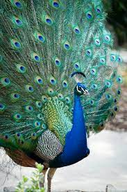
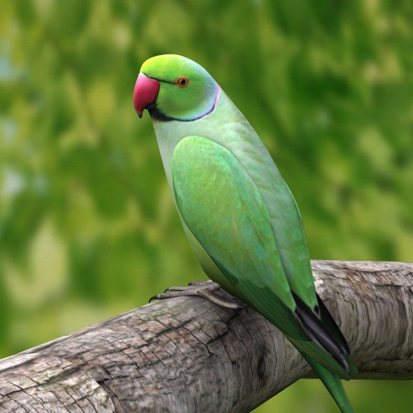
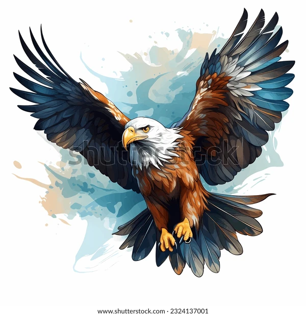

A.P.J. Abdul Kalam (born October 15, 1931, Rameswaram, India—died July 27, 2015, Shillong) Indian scientist and politician who played a leading role in the development of India’s missile and nuclear weapons programs.
He was president of India from 2002 to 2007.
Kalam earned a degree in aeronautical engineering from the Madras Institute of Technology and in 1958 joined the Defence Research and Development Organisation (DRDO).
Narendra Damodardas Modi
Narendra Modi’s inspiring life journey to the Office of Prime Minister began in the by-lanes of Vadnagar, a small town in North Gujarat’s Mehsana district.
He was born on the 17th of September 1950; three years after India had gained its Independence.
This makes him the first Prime Minister to be born in independent India. Mr. Modi is the third child born to Damodardas Modi and Hiraba Modi.
Mr. Modi comes from a family of humble origins and modest means.
Sudha Murty
On 19 August 1950, Sudha Murthy was born in a Brahmin family in Shiggaon, Karnataka.
Her father Dr R.H. Kulkarni who was a surgeon and her mother Vimala Kulkarni supported her in her endeavours right from her childhood and raised young Sudha along with her three siblings.
An educated atmosphere in the family instilled in her a passion to do something.
Sudha Murthy’s brother Srinivas Kulkarni is a renowned astronomer who received the Dan David Prize in 2017.

PEACOCK
Peacocks are the male versions of the Peafowl birds.
This name has been provided to two different species of these birds which are the prime members of the family of Pheasants. There are different types of birds belonging to this family and the peacock bird is just one of them. These birds are mostly known for their feathers and the bright color of their skin.
Peacocks are known to be very proud creatures.

PARROT
The parrot is a very fascinating bird.
It comprises a strong curved bill with an upright stance along with strong legs and clawed zygodactyl feet.
Parrots have vividly coloured structures and some of them also have multi colours they exhibit little or no sexual dimorphism in the visual spectrum.
Birds are the warm-blooded vertebrates that belong to the class Aves. Birds are known to be evolved from a group of dinosaurs called theropods.

EAGLE
Eagles are known as birds of prey because they hunt animals as their food.
They are similar to hawks,falcons and vultures.
Due to their strength and soaring flight, eagles held a special place in the human imagination.
From ancient times the golden eagle has been a symbol of power.
The national symbol of the United States is the Bald Eagle.
Eagles are present all over the world.They fly high in the sky.